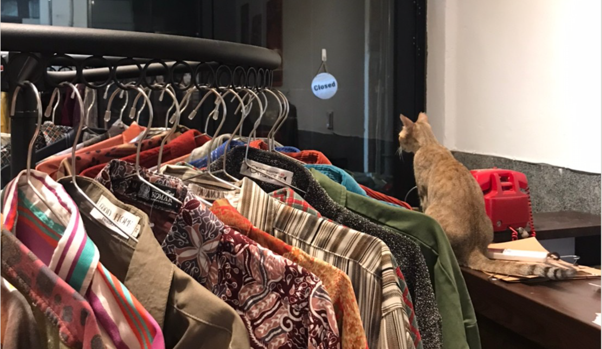
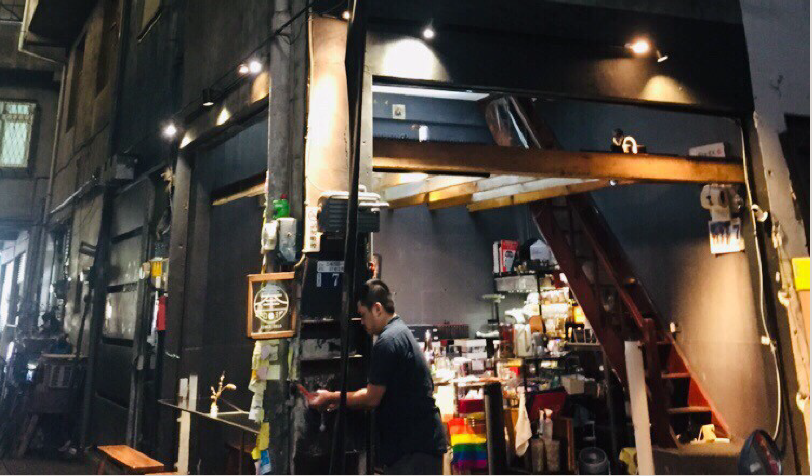

踏入忠信市場，靜謐的小巷，一股神祕感油然而生，穿梭在交錯的老舊房屋中，可以聽見居民 三三兩兩的閒談聲與宛如鳥鳴的古典樂章，在這平日的午後，踏進這個文藝聚落，少數的店家 已然開張，於是我們停止了步伐⋯⋯

老闆從大一跟朋友逛街時開始接觸古著，大二開始在網路上賣衣服，後來有了自己的工作室， 直到今年，喜歡老房子的老闆，在因緣際會下來到忠信市場這個藝文聚落開起店面，他認為這 裡的環境悠然舒適，便在此紮根。
中途島古著開幕第二個月，一樓賣古著，二樓則是多元的空間，會辦一些畫展、書展，不定期 會有刺青師駐店，十一月還會有塔羅牌駐店，騎樓賣的咖哩飯也可以到二樓享用，使中途島古 著不單單只是賣衣服的店面，更像選物店，讓來到這裡的客人可以有更多元的享受。
中途島這個名字系因中途島戰役，這場戰役剛好與老闆生日同天，所以取了這個特別的名字， 在老闆眼中，古著不一定等於二手衣，「它們」反而是在某個時代裡有著特別意義的衣服，又 或是可以代表那個時代的流行風格。


坐落在忠信市場的開放式咖啡廳，經過時不自覺被咖啡的濃濃的香味跟古典音樂吸引，老闆以 奉茶的概念，取了「奉咖啡」這個名字。店內咖啡豆品種各式各樣，更希望留下懂得品嘗的顧 客，老闆依照人生豐富的經驗，調整出屬於每杯咖啡的風味。在奉咖啡，喝到的不僅僅是一杯 咖啡，更是啜飲環境的閒逸氛圍，感受著市場的氣味。
而在杯墊發現了老闆的小巧思，杯墊是一疊便條紙，上面寫著咖啡的名字，有些客人會順手留 下一些話並貼到一旁的柱子上，在滿滿的便條裡看見了來自各地的人情味，走到二樓，是開啟 另一個閒適的世界，榻榻米配上橙黃色的燈光，彷彿置身在黃昏的鄉村中，來到這裡邊品嚐咖 啡邊與風趣的老闆閒聊後，覺得奉咖啡打破了對咖啡廳既定的印象，除了樸實更能感受到它多 層次的魅力。